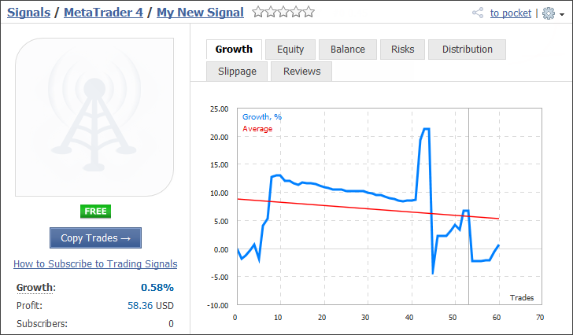
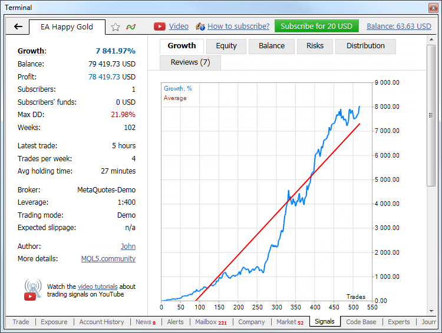
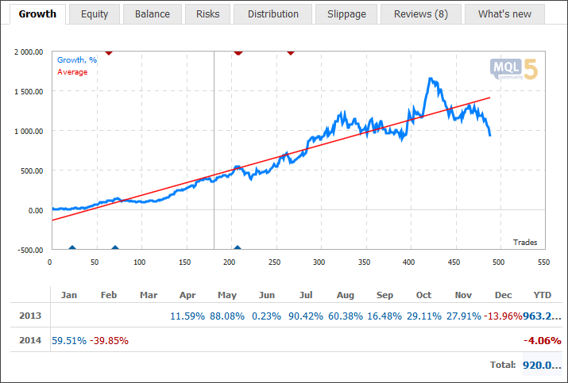
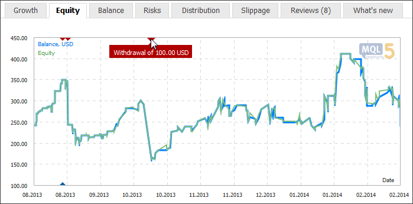
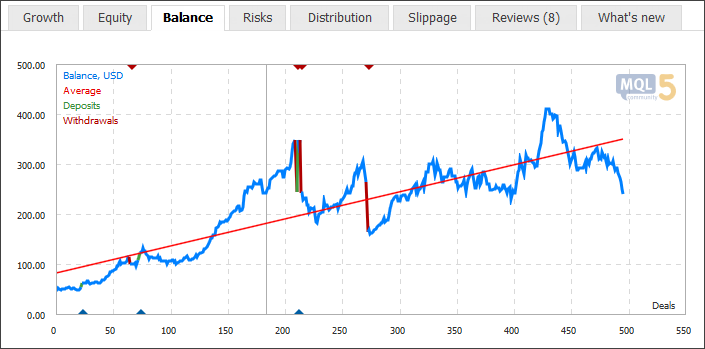
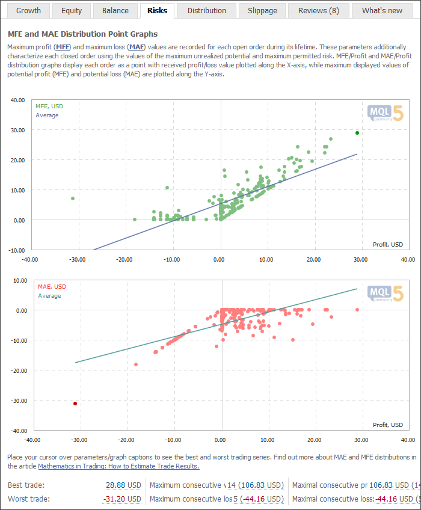
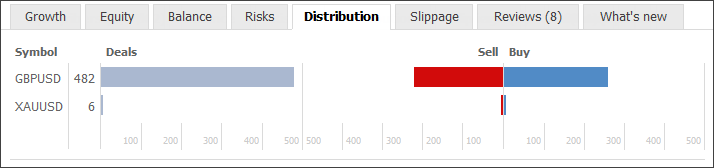
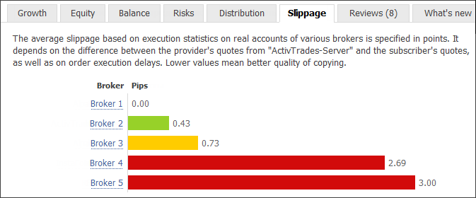
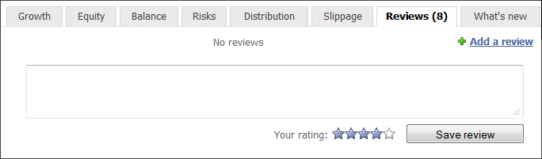

- Signal Providers
- Signal Subscribers
- Account Monitoring
Account Monitoring
The system of trade account monitoring is a part of "Signals" service. A detailed report can be received on any available signal.
A trade account can be monitored both via MQL5.community website and directly via the client terminal. Move to "Signals" section on the website and select any signal to view its parameters:

If you want to find data on a signal via the client terminal, open it in Signals tab of the Terminal window.
Watch video: Visualize a signal on a chart The effectiveness of the entry points and the unrealized profit can be easily assessed with the visualized chart of provider's deals. |

Data on a trading account is divided into several blocks.
Basic Data
Basic data is located on the left side of the page.
- Growth – growth of the deposit in percentage terms calculated on the basis of trade operation only without taking into the account the deposits and withdrawals.
- Initial Deposit – amount of money deposited to the account when opening it.
- Deposits – funds deposited on the account during its life time. This parameter should always be considered when evaluating the signal's profitability. The balance curve may be supported by regularly deposited funds.
- Withdrawals – funds withdrawn from the account during its life time.
- Balance – money on the account, not accounting the floating profit of currently open orders.
- Equity – deposit funds accounting for the results of the currently open positions (floating profit/loss).
- Profit – profit/loss gained during the life time of the account.
- Subscribers – current amount of the signal subscribers.
- Subscribers' funds – total funds used by the signal subscribers (deposit load selected in the copying settings is considered). Only funds on real accounts are considered.
- Max drawdown – maximal balance drop relative to the local maximum in deposit currency.
- Weeks – number of weeks that have passed since the first trade on the trading account was performed (the entire account lifetime instead of the period since its registration as a signal is considered).
- Last trade – amount of time passed since the last trade operation on the account of the signal provider.
- Trades per week – average number of trades per week.
- Avg holding time – average time of holding an open position.
- Broker – name of a broker server where the account is registered.
- Leverage – leverage value.
- Type – trading type: Demo, Contest (for example, the account for participation in the Automated Trading Championship) or Real. Please note that demo accounts allow traders to afford the risks that may be unacceptable for real accounts.
- Author – author (MQL5.community account) name.
- Expected slippage – slippage based on statistics concerning copying of trades between subscriber's and provider's servers. This parameter is available only in the trading terminal.
Watch video: Trade statistics, growth, equity & balance graphs Trade statistics is a detailed information on a signal, that will help you to make a wise decision. Growth, equity & balance graphs allow you to visually estimate a successful provider. |
Graphs
The following graphs are available in the monitoring system:
Balance Growth

The vertical line in the graph indicates the moment when the trade account was connected to the monitoring system. Triangles and displayed on horizontal axes indicate balance operations on the account - withdrawals and deposits. If you put the mouse cursor over it, the operation amount will be displayed.
Below the graph, you can find a table containing monthly and annual returns. To view the growth for a specific month on the chart, click the corresponding return value.
Equity graph

For higher informativeness the graph also includes the balance curve.
The vertical line in the graph indicates the moment when the trade account was connected to the monitoring system.
Triangles and displayed on horizontal axes indicate balance operations on the account - withdrawals and deposits. If you put the mouse cursor over it, the operation amount will be displayed.
Balance Graph

The vertical line in the graph indicates the moment when the trade account was connected to the monitoring system. Triangles and displayed on horizontal axes indicate balance operations on the account - withdrawals and deposits. If you put the mouse cursor over it, the operation amount will be displayed. Balance changes occurred as a result of withdrawals and deposits are additionally highlighted with red and green color respectively.
Watch video: Risks, distribution, news and reviews of trading signals How risky your provider trades and what other subscriber think of that? Watch this video and we will answer your questions. |
Risks
This section displays MFE and MAE distribution point graphs.

Maximum profit (MFE) and maximum loss (MAE) values are recorded for each open order during its lifetime. These parameters additionally characterize each closed order using the values of the maximum unrealized potential and maximum permitted risk. MFE/Profit and MAE/Profit distribution graphs display each order as a point with received profit/loss value plotted along the X-axis, while maximum displayed values of potential profit (MFE) and potential loss (MAE) are plotted along the Y-axis.
If you place cursor over a position point on a graph, the same position point will be highlighted on the other graph. Thus you can analyze both potential profit and loss of every position.
The following statistical rates are displayed below the graphs:
- Best trade – trade having the highest profit among all profitable ones;
- Worst trade – trade having the worst loss among all loss-making ones;
- Maximum consecutive wins – the amount of trades in the longest profitable sequence and its total profit;
- Maximum consecutive losses – the amount of trades in the longest losing sequence and its total loss;
- Maximal consecutive profit – the largest profit in a continuous profitable sequence and the amount of appropriate profitable trades;
- Maximal consecutive loss – the largest loss in a continuous losing sequence and the amount of the appropriate losing trades;
If you place cursor over a rate, the corresponding trades will be highlighted on the graphs.
|
Distribution
On the "Distribution" tab you can find the number of trade operations displayed by symbols and by type (Buy and Sell):

Slippage
Slippage tab displays average slippage when executing trade operations on the servers of various brokers.

The average slippage is calculated based on statistics of trading signals execution at different brokers. Statistics is gathered for all signals at the provider's server. The difference between the order price placed by the signal provider and the order execution price at the subscriber's server is defined. The average value is calculated based on these data.
Number of slippage points is displayed according to the price accuracy (number of decimal places) at the signal provider's side.
Slippage can be caused by differences in quotes on the servers or trade execution delays. The lower the slippage, the higher the accuracy of the signal copying.
Reviews
On the "Reviews" tabs, MQL5.community members can express their opinion on the signal.

News
Using this tab, the signal provider can inform subscribers about any changes in the signal operations as well as provide any other useful information. If no news are published, this tab is not displayed.
Trade Statistics
Detailed account trading statistics can be found below the chart.
- Trades – total number of trades (orders that fix profit or loss);
- Profit Trades – number of profitable trades and their share in the total number of trades in percentage value;
- Loss Trades – number of losing trades and their share in the total number of trades in percentage value;
- Long Trades – number of buy orders fixing profit and amount of profitable long orders in percentage value;
- Short Trades – number of sell orders fixing profit and amount of profitable short orders in percentage value;
- Best trade – trade having the highest profit among all profitable ones;
- Worst trade – trade having the worst loss among all loss-making ones;
- Profit Factor – ratio between gross profit and gross loss. One means that these parameters are equal;
- Gross Profit – sum of all profitable orders in monetary units;
- Gross Loss – sum of all loss-making orders in monetary units;
- Average Profit – average profit for all profitable orders;
- Average Loss – average loss for all loss-making orders;
- Recovery Factor – this parameter displays the risk level of the strategy (the funds that are put to risk to earn the obtained profit). It is calculated as the ratio of gained profit to the maximum drawdown;
- Sharpe Ratio – this parameter shows strategy efficiency and reliability. It displays the ratio of the arithmetic mean profit during the time the position was open and the standard deviation from that profit. The risk-free rate, which is the profit gained from the appropriate bank deposit funds is also considered here;
- Expected Payoff is a statistically calculated parameter displaying average profitability/unprofitableness of one trade. Also, it is considered to display the expected profitability/unprofitableness of the next trade;
- Maximum consecutive wins – the amount of trades in the longest profitable sequence and its total profit;
- Maximum consecutive losses – the amount of trades in the longest losing sequence and its total loss;
- Maximal consecutive profit – the largest profit in a continuous profitable sequence and the amount of appropriate profitable trades;
- Maximal consecutive loss – the largest loss in a continuous losing sequence and the amount of the appropriate losing trades;
- Annual Forecast – deposit growth forecast for a year according to the monitoring period results;
- Monthly growth – deposit growth for the last month in percentage values.
Trading Operations
The lower part of the monitoring page displays a detailed data on trading operations on the account.
Positions
Current open positions are shown in a table with the following fields:
- Order – ticket number (a unique identifier) of the order;
- Time – time when the position was opened. The record is represented as YYYY.MM.DD HH:MM (year.month.day hour:minute);
- Type – position type: "Buy" – long, "Sell" – short;
- Volume – volume of a trade operation (in lots). The minimal volume and its change step are limited by a brokerage company, the maximal one – by the deposit size;
- Symbol – a financial instrument of the open position;
- Price – the open price of the position;
- S/L – Stop Loss level for the current position. If this order was not placed, a zero value is shown in the field;
- T/P – Take Profit level for the current position. If this order was not placed, a zero value is shown in the field;
- Price – the current price of the financial symbol. Bid price is displayed for short positions, while Ask price is used for long ones;
- Commission – broker commission charged for the trade operation;
- Swap – amount of swaps charged;
- Profit – the financial result of the deal with the account for the current price is written in this field. A positive result indicates the profitability of the deal, negative one indicates the loss.
Placed pending orders are shown below:
- Order – ticket number (a unique identifier) of the pending order;
- Time – time when the pending order was placed. The record is represented as YYYY.MM.DD HH:MM (year.month.day hour:minute);
- Type – type of the pending order: "Sell Stop", "Sell Limit", "Buy Stop" or "Buy Limit";
- Volume – volume requested in the pending order (in lots);
- Symbol – a financial instrument of the pending order;
- Price – price of the pending order activation;
- S/L – level of the placed Stop Loss order. If this order was not placed, a zero value is shown in the field;
- T/P – level of the set Take Profit order. If this order was not placed, a zero value is shown in the field;
- Price – the current price of the financial symbol. Bid price is displayed for short orders, while Ask price is used for long ones. The price of the last performed deal (Last) is displayed for the orders involving exchange symbols (both directions).
History
This tab displays the history of orders on the trading account. The history of orders is also displayed in a table with the following fields:
- Order – ticket number (a unique identifier) of an order;
- Time – time of an order. The record is represented as YYYY.MM.DD HH:MM (year.month.day hour:minute);
- Type – type of a trade operation: "Buy" – a buy deal, "Sell" – a sell deal;
- Volume – volume of an executed order (in lots);
- Symbol – financial instrument of an order;
- Price – price an order was executed at;
- S/L – level of the placed Stop Loss order. If this order was not placed, a zero value is shown in the field;
- T/P – level of the set Take Profit order. If this order was not placed, a zero value is shown in the field;
- Time – time of closing a position. The record is represented as YYYY.MM.DD HH:MM (year.month.day hour:minute);
- Commission – broker commission charged for the trade operation;
- Swap – amount of swaps charged;
- Profit – the financial result of the order closing;
- Comment – comment to a trade operation.